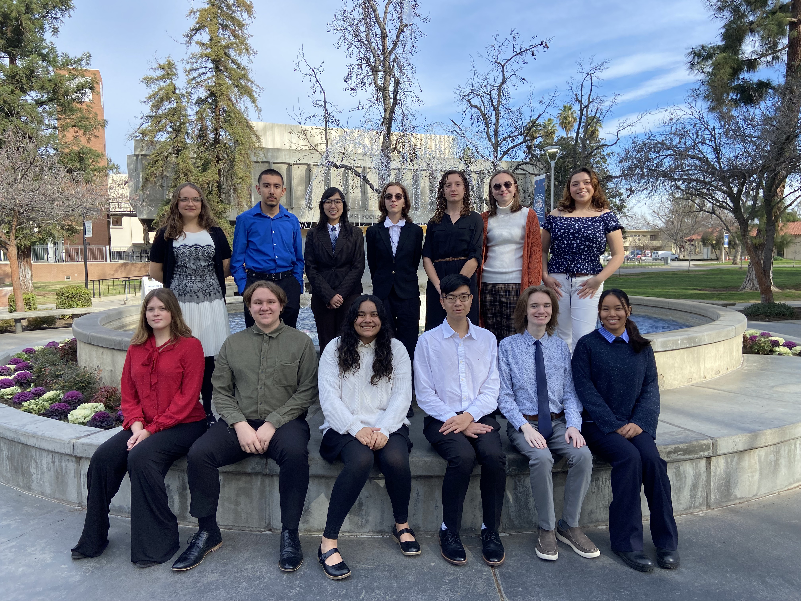
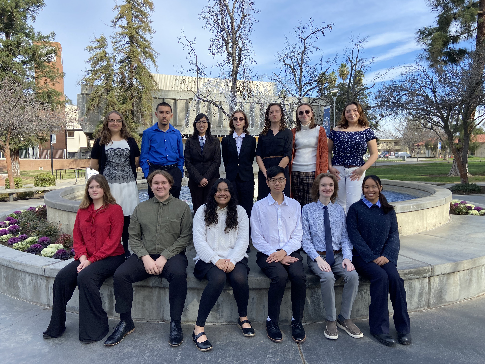

Home
I have been a part of my school's Academic Decathlon team for the past 3 years and it has been genuinely the
best thing I could have done for myself.
From sophomore to senior year I got to meet such amazing people and build relationships with all of them.
During my senior year, I was captain of my team leading my team to winning 5th overall, 2nd in our division and
3rd in Super Quiz. I won silver in mathematics and essay writing, bronze in economics and won the Coaches Choice
Award.
While my last year in Academic Decathlon was definietly bittersweet as I had to say goodbye to the thing I enjoyed most, I know that it has prepared me well for future leadership roles.
 
